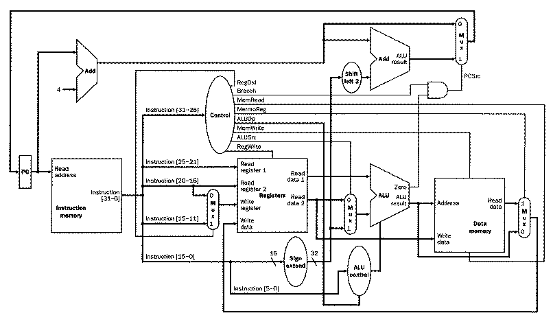

Hardware
Hardware are the more physical components of a computer. We focus on the Central Processing Unit(CPU) here although there are other elements of the Computer as well.
This segment corresponds to CSE 141 and CSE 141L at UCSD
Click on the basic single cycle processor to take a look deeper into these parts.